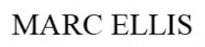

Trade Mark Journal No.2025/032 8 August 2025
WO0000001866186 (3,9,14,18,25,35)
Office of origin: Italy
Date of International Registration:14 February 2025
Date of designation in the UK:
14 February 2025

The trademark consists in the wording MARC ELLIS.
- Class 3
- Perfumery and fragrances; eau de Cologne; oils for toilet purposes; essential oils; air fragrance preparations; air fragrance reed diffusers; fragrance refills for non-electric room fragrance dispensers; cosmetic facial preparations; facial cleansers being cosmetics; face lifting patches for cosmetic use; facial serums for cosmetic purposes; cosmetic creams and gels for the face, hands and body; cosmetic preparations for body care; lip cosmetics; eye make-up; make-up preparations for the face and body; make-up removing lotions; creams for cellulite reduction not for medical use; beauty masks; body deodorants; deodorants for pets; depilatory preparations; sun creams; shower and bath foam; bath salts, not for medical purposes; bath oils for cosmetic purposes; cosmetic preparations for the hair and scalp; hair shampoos; hair conditioners; hair dyes; facial soaps; shaving soap; shaving preparations; dentifrices not for medical use; nail care preparations not for medical use, nail varnish; false nails; nail art stickers; mascara; lipsticks; eyeshadow; foundation; make-up pencils; perfumes and toilet water; tissues impregnated with make-up removing preparations; cosmetics for animals; bath preparations for animals; scented linen water; joss sticks; fragrance for household purposes; creams for leather; laundry detergents; cleaning preparations for household purposes; blush pencils.
- Class 9
- Eyewear; spectacles; sunglasses; spectacle lenses; goggles for sports; spectacle frames; 3D spectacles; spectacle cords; spectacle chains; eyewear cases; covers for smartphones; headphones for smartphones; smartwatches; decorative magnets; wearable activity trackers; downloadable music files; computer software applications, downloadable; smart glasses; electronic book readers; protective covers for electronic book readers; electronic books; downloadable digital image files authenticated by non-fungible tokens NFTs related to clothing, bags, glasses, jewellery, watches, perfumery and cosmetic products; downloadable application software for virtual environments; downloadable mobile applications for ordering products such as perfumery items, cosmetics, eyewear, jewels, jewellery, watches, bags, wallets, sports bags, rucksacks, suitcases, umbrellas, footwear, clothing, headwear and clothing, footwear, headgear incorporating digital sensors; downloadable virtual goods, namely, computer programs featuring footwear, clothing, headwear, eyewear, bijoux, jewellery, timepieces, bags, sports bags, backpacks, sports equipment and accessories for use online and in online virtual worlds; downloadable virtual clothing.
- Class 14
- Jewellery; paste jewellery; timepieces; precious stones; semi-precious stones; rings being jewellery; bracelets; earrings; pendants being jewellery; necklaces being jewellery; pins being jewellery; boxes of precious metal; jewellery boxes; chronographs being watches; chronometers; wristwatches; pocket watches; alarm clocks; watch bands of metal, leather or plastic; watch chains; cases for timepieces; cuff links; tie pins; works of art of precious metal; pearls being jewellery; silver jewellery, jewellery made of semi-precious materials; jewellery plated with precious metals.
- Class 18
- Luggage; suitcases; carry-on bags; trunks; bags; handbags; bags of leather; bags of imitation leather; shoulder bags; workbags; bags for sports clothing; key cases of leather or imitation leather; change purses; wallets; business card cases; school bags; credit-card cases of leather or imitation leather; belt bags; cosmetic cases not fitted; backpacks; umbrellas and parasols; walking sticks; harnesses; whips; saddlery; collars for pets; animal leashes; clothing for pets; leather, unworked or semi-worked; hat boxes of leather; animal skins; imitation leather; curried skins; skins of chamois, other than for cleaning purposes; labels of leather.
- Class 25
- Clothing for men; clothing for women; clothing for children; shoes; headgear; clothing of imitations of leather; leather clothing; fur clothing; sportswear; coats; raincoats; jackets being clothing; trousers; skirts; dresses; suits; shirts; blouses; t-shirts; sweaters; underwear; pajamas; swimwear; beachwear; socks; stockings; gloves being clothing; ties; scarves; foulards being clothing articles; hats; sun hats; caps; boots; sandals; slippers; gymnastic shoes; dress shoes; belts being clothing; ankle-length pants; tracksuits; ski suits; down jackets; crop tops; shawls; tailleurs; dressing gowns; negligees; sweatshirts; ski clothing; ski gloves; ski boots; tennis clothing; cycling gloves; beach cover-ups.
- Class 35
- Wholesale, retail sale and online retail sale services relating to cosmetic products, perfumery, eyeglasses, past jewellery, jewellery, watches, bags, luggage, wallets, unworked leather and curried skins, clothing and accessories for pets, textiles, household linen, furniture and furnishing accessories, clothing, shoes and headwear; organization of presentations for commercial or advertising purposes; organization of exhibitions and fairs for commercial or advertising purposes; presentation of goods on communication media, for retail purposes; presentation and demonstration of goods; business administration; business management of shops; commercial intermediation services; advisory and assistance services relating to the establishment and operation of franchises; assistance in product commercialization within the framework of a franchise contract; administrative processing of purchase orders; import-export agency services; sales management; marketing; advertising; advertising and sales promotion services relating to products and services offered and ordered via telecommunication or electronic means; social media marketing.
ATLANTIC FASHION GROUP LIMITED
Representative: PRAXI INTELLECTUAL PROPERTY SPA, VIA C. LANDINO 14, I-50129 FIRENZE (FI), ITALY